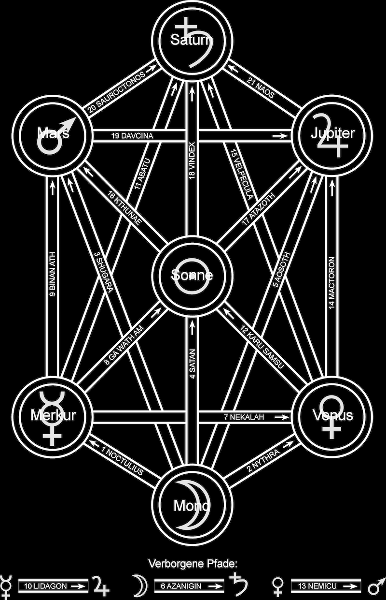

Beschreibung von Formen und Wesenheiten entlang der Pfade:
Abatu - 11. Pfad
Eine erdgebundene Form zerstörerischer, negativer Energie. Mit Arbeiten des Opfers assoziiert. Fis Dur als musikalischer Schlüssel.
Aosoth - 5. Pfad
Dunkle weibliche Kraft. Arbeiten der Leidenschaft und des Todes. Name sollte vibriert werden.
Atazoth - 17. Pfad
Der mächtigste der Dunklen Götter. Der Name selbst deutet das Ziel des kosmischen Zyklus und das Öffnen der Tore an, da 'Atazoth' als Wort 'ein Ansteigen/Verstärken von Azoth' bedeutet.
Athushir - 16. Pfad
Symbolische Form. Schlange des Feuers ('Drache'), oft als Erinnerung eines der Dunklen Götter während eines ihrer früheren (nur teilweise erfolgreichen) Eintritte in unser kausales Universum betrachtet. Wort der Macht: Kthunae. Wird vibriert, um diese Wesenheit hervorzubringen.
Azanigin - 6. Pfad
Mutter aller Dämonen, die wartend in der Erde liegen. Musikalischer Schlüssel: B-moll. Sehr nützlich in allen Arbeiten persönlicher Zerstörung.
Binan Ath - 9. Pfad
Bedeutet 'Sieh das Feuer'.
Budsturga - 13. Pfad
Eine blaue, ätherische Form. Die Tradition beschreibt sie als einen Dunklen Gott von weiblichem Aspekt, der im Vortex zwischen dem kausalen und dem akausalen Raum gefangen ist. Repräsentiert auf gewisse Weise verborgene Weisheit - ist aber generell gefährlich für die geistige Gesundheit. Manifestiert partiell wenn Nemicu vibriert wird.
Darkat - 8. und 10. Pfad
Göttin, mit lunaren Aspekten assoziiert. Der Name wird traditionell als prä-sumerischen Ursprungs angesehen. Darkat gilt als Ursprung des Mythos um Lilitu/Lilith - dem weiblichen Gegenstück zu Dagon, erinnert als einer der Dunklen Götter von ihrer letzten Manifestation auf der Erde.
Davcina - 19. Pfad
Weibliche Form entlang des 19. Pfades. Vibrieren. Nützlich für Arbeiten der Verzauberung.
Gaubni - 2. Pfad
Häufig der Große Dämon genannt. Absloßend in Geruch und Aussehen. Kann manifestiern, wenn Nythra vibriert wird.
Ga Wath Am - 8. Pfad
Vibration setzt sehr mächtige Energien frei. Musikalischer Schlüssel: A (mit einem Kristall-Tetraeder) um die Dunklen Kräfte des Abyss zu rufen. Nur nach sorgfältiger Vorbereitung vibrieren. Entsprechend der Tradition bedeutet der Name 'Die Macht ist stark in mir - ein Verweis auf die inneren Pfade, die zu den Dunklen Göttern führen.
Karu Samsu - 12. Pfad
Wort der Macht. Musikalischer Schlüssel A-Dur. Laut Tradition bedeutet es 'Ich invoziere die Sonne'.
Kthunae - 16. Pfad
Wort der Macht. Vibrieren, um dieses Wesen hervorzubringen.
Lidagon - 10. Pfad
Symbolische Repräsentation der geschlechtlichen Gegensätze (Darkat/Dagon) in ihren dunkleren Aspekten.
Mactoron - 14. Pfad
Wort der Macht. Musikalischer Schlüssel: A-moll. Der Legende nach ist es der Name einer der planetaren Heimaten der Dunklen Götter, später bekannt als frühes Sternentor.
Nekalah - 7. Pfad
Kollektiver Name für die Rasse der Dunklen Götter. Name sollte ähnlich wie Atazoth vibriert werden.
Nemicu - 13. Pfad
Bringer von Weisheit. Name sollte vibriert werden.
Noctulius - 1. Pfad
Gottheit der Nacht. Nützlich für Arbeiten der Verzauberung. Musikalischer Schlüssel: G-moll, Räucherung: Petriochor.
Nythra - 2. Pfad
Energie-Vortex im Abyss. Ohne Namen, aber durch Vibration des Wortes repräsentiert. Arbeiten des Terrors und sinistrer Zerstörung.
Sapanur - 11. Pfad
Das plötzliche Feuer der Zerstörung. Ein vorzeitlicher Atavismus menschlichen Ursprungs - hat nichts mit den Dunklen Göttern zu tun.
Shaitan - 4. Pfad
Seit Langem für einen erdgebundenen Repräsentanten der Dunklen Götter gehalten. Räucherung: Schwefel. Stein: Opal. Name sollte vibriert werden.
Shugara - 3. Pfad
Eine der finstersten Eindringlinge, die auf dem kausalen Level möglich sind, und sehr gefährlich. G-Dur für die Invokation. Manifestationen werden oft von einem Geruch, ähnlich verrottendem Fleisch begleitet. [s. Gaubni]
Anmerkung: Die Räucherungen für die Pfade sind eine Mischung aus denen der planetaren Sphären, die mit diesem Pfad verbunden sind. So ist z.B. für den 2. Pfad die Räucherung ein Mix aus Petriochor (Mond) und Sandelholz (Venus). Die Räucherungen der Sphären können der Tafel der Korrespondenzen entnommen werden.